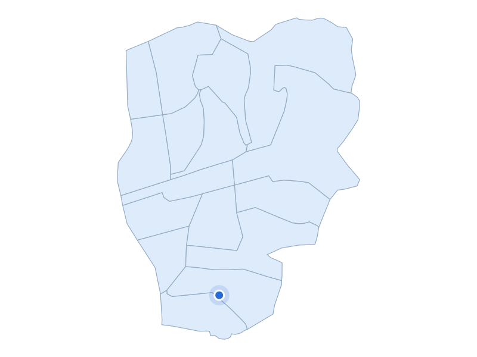

부동산 데이터 | 신혼부부가 사는 곳
거주 수 19위 · 서울 중랑구

신내역 3번출구 버스정류장 일대
지역 자료사진 · 촬영 2015 · CC BY-SA 3.0
주거·생활권을 실제 장소와 함께 비교합니다
거주 신혼부부 · 2024년
7,547쌍
주거 특징·랜드마크
중랑구 신내동은 택지개발로 아파트 주거지가 조성된 지역입니다.
주거 특징·랜드마크
현재 신내역은 경춘선과 6호선을 이용할 수 있는 철도 거점입니다.
주거 특징·랜드마크
역 주변 생활시설로는 서울의료원과 청남공원이 공식 주거정보에 안내돼 있습니다.

서울 중랑구 · 실제 가격 집계구역
파란 점: 단지 위치
지역 아파트 실거래 중위값
7억 9,150만원
지역 거래 404건
단지 사례
현대
8억 250만원
단지 거래 8건
2026-05-01 ~ 2026-10-31 계약
전용 83~85㎡ · 아파트 매매 · 취소 제외